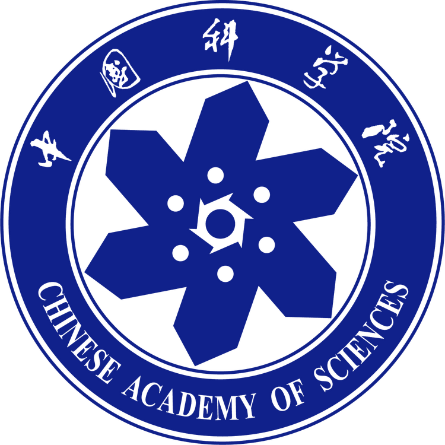
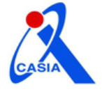

I am a Ph.D. candidate at
 
My research centers on Embodied Intelligence (Robotics & Game Agents) and Multimodal Models. My long-term goal is to develop intelligent agents that can assist people in both the physical world and virtual environments, including games.
My current research focuses on VLM as Policy and World Models.